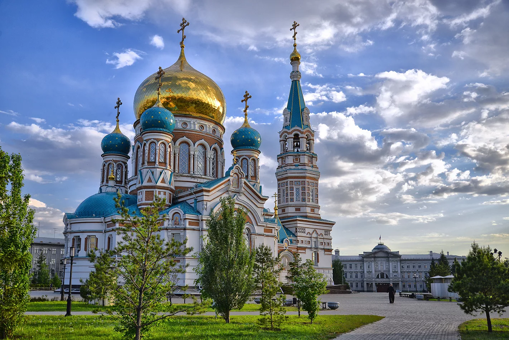
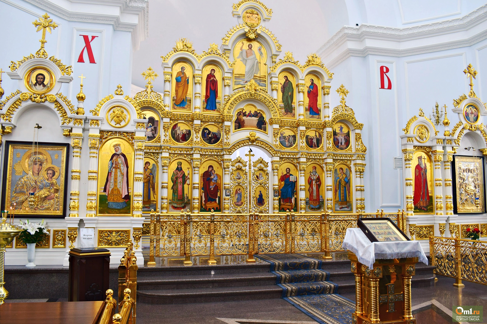
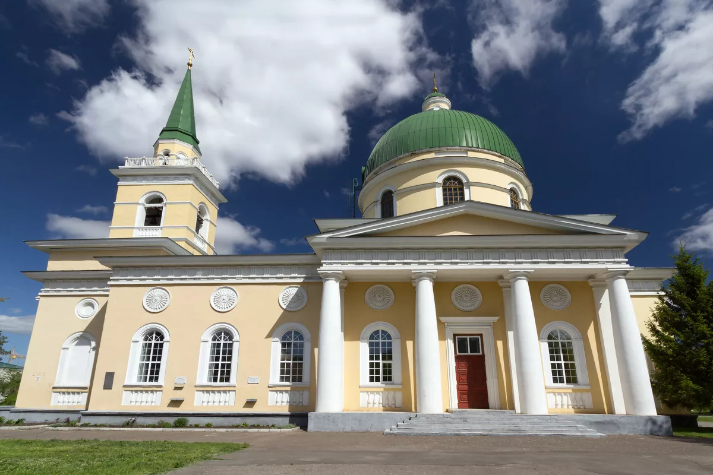
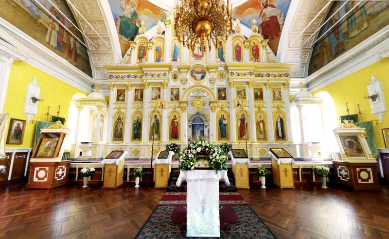
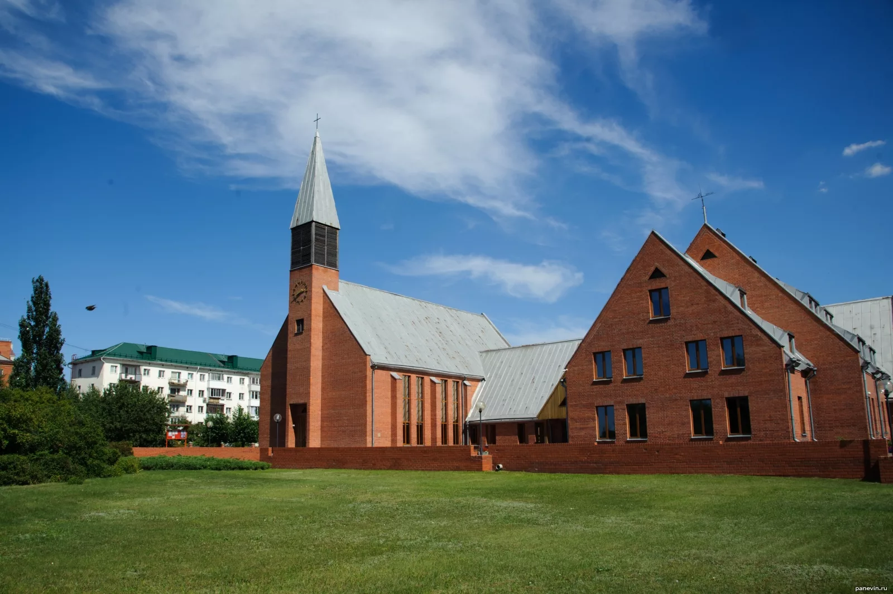
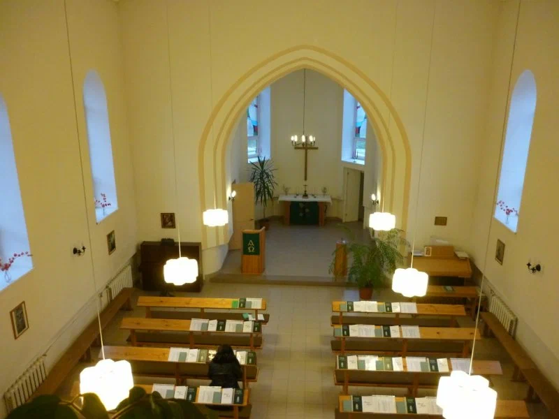
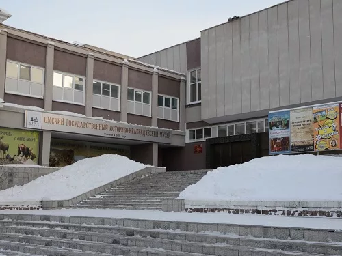
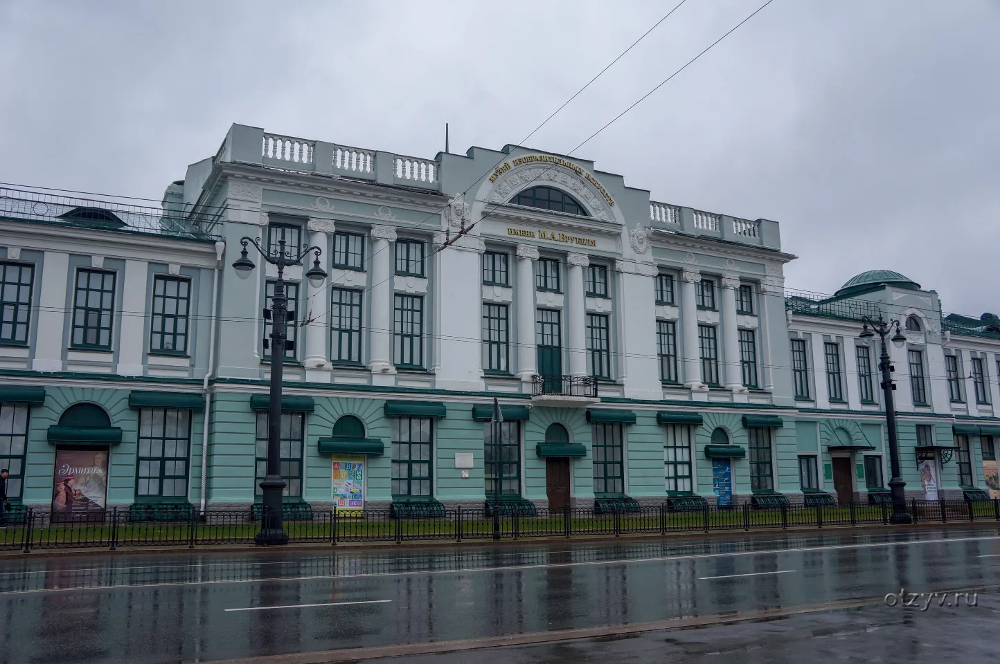
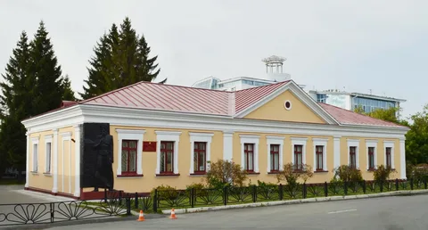

Православный храм в Омске, восстановленный в XXI веке.

Сохранилось детальное описание собора XIX века (в 2007 году храм был восстановлен по фотографиям, и не во всех деталях повторяет оригинал). Площадь собора составляла 1518 м², высота колокольни до подкрестного яблока — 44 метра, высота креста — 3 метра, диаметр купола — 15 метров. В то время церковь имела сложное объёмно-планировочное решение с сохранением традиционной композиции: алтарь, средняя часть храма, трапезная и притвор с колокольней. Церковь была установлена на высокий цокольный этаж, выполнена из кирпича (в строительстве использовались 30 видов лекального кирпича разных цветов)[2]. Архитектурное решение — крестообразное в разрезе. Пятиглавие представляет собой шлемовидные купола, возвышающиеся на цилиндрических башнях-барабанах, прорезанных арочными окнами. Над алтарём имеется пятигранная конха. Кровля трапезной двускатная.

Исторический храм, построенный в честь Николая Чудотворца.

Внутри можно увидеть: Трёхъярусный иконостас в классическом стиле, украшенный пилястрами с позолоченными капителями и сдержанными царскими вратами. Фресковую живопись верхнего яруса стен и купола с тщательной проработкой деталей. Резные иконы-мощевики преподобного Серафима Саровского и святителя Феодосия Черниговского, расположенные по обеим сторонам иконостаса. Ковчег с частицами святых мощей, среди которых Преподобный Сергий Радонежский, Святитель Филарет Московский, Великомученик Георгий Победоносец, Преподобный Максим Грек и другие. 3 Абалакскую икону Богоматери, почитаемую по всей Сибири.

Историческое религиозное здание в Омске, построенное в XVIII веке и единственный храм того времени, сохранившийся до наших дней.

Храм принимал прихожан без малого полтора столетия, закрыли его в 1930 году. В 80-х годах прошлого века здание бывшей лютеранской церкви отремонтировали, убрали культовые элементы с фасада и из внутренних помещений. Сейчас здесь хранятся коллекции Музея областного УВД, можно познакомиться с историей омской полиции, увидеть настоящее современное и старинное оружие, наградные и памятные знаки.

Омский краеведческий музей

Омский областной музей изобразительных искусств имени М. А. Врубеля

Литературный музей имени Ф. М. Достоевского